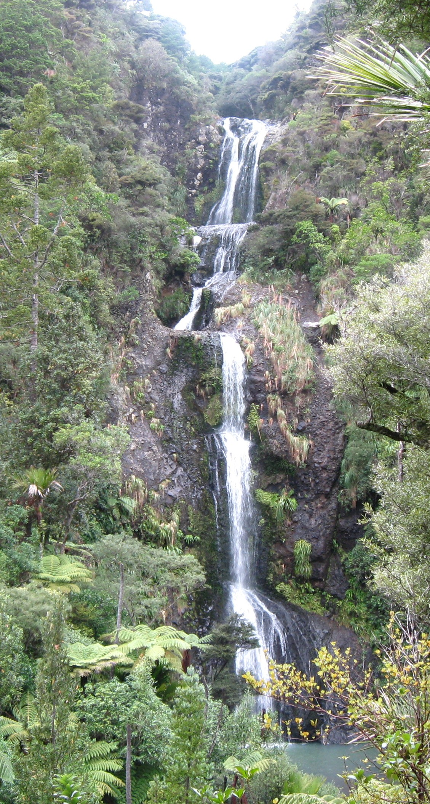

Kitekite Falls, also known as Kitakita Falls, is located in the western part of Waitakere Ranges Regional Park, near the famous Piha Beach. This spectacular 40-meters multi-step waterfall is reached after a more or less easy 30 minutes’ walk.
Remember to upload the source image listed below into your Drupal site.
Unit5/images/KitekiteFalls.jpgPreview of image to use:
North Island
Easy
Kitekite Falls is roughly a 1-hour’s drive away from Auckland City. The road surface is always sealed.
From Auckland follow the road which leads to Piha. When you are in Piha, turn right into Glenesk Rd and follow it for the next 1km. There is a parking area at the end of Glenesk Rd, which has toilets and a couple of tables. There is also an overflow parking a few hundreds meters before the main car park.
A 30-minutes' Kitekite Falls Track starts from the car park and leads to the waterfall’s base. En route is a track sign saying 15 minutes to the falls top, or 10 minutes to the falls, just keep to the right. The track is a more or less easy one, which offers excellent views of the falls and has some benches along the way to relax after a few uphill sections. The last part of the track has some stairs, which can be slippery, so please take care while you're going downstairs.
The trail brings you to the stream and the falls base. There is a cool swimming spot at the waterfall's base, so don't forget a towel.
From here you can return via the same track (a 30 minutes walk), or cross the stream (could be a wet-shoes crossing) and follow Kitekite Falls Track which brings you back to the car park (a 30 minutes walk), or walk a more challenging track which leads to the top of the waterfall. If you choose the last option, please make sure you’ve got the right tramping shoes. This track climbs to the waterfall’s top and takes roughly 15 minutes one-way. On the top of the waterfall, you’ll find a couple of good swimming spots and an incredible view of the valley.
Make sure you use the cleaning station when you start/finish the walk.
40
60
https://www.youtube.com/watch?v=4PswmRQS0BsVideo preview
https://www.aucklandcouncil.govt.nz/parks-recreation/get-outdoors/aklpaths/Pages/path-detail.aspx?ItemId=379Acquia Inc. | Acquia Academy Drupal Site Building course | Drupal is a registered trademark of Dries Buytaert.